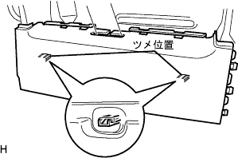

フロントシートベルトLH 取り付け |
| 1. フロントシート アウタベルトASSY LH取り付け（リトラクタ部） |
 |
ボルト2本でフロントシート アウタベルトASSY LH(リトラクタ部)を取り付ける。
| 2. フロントシート ショルダベルト ガイド取り付け |
シートベルトを通しツメをかん合させ、フロントシートショルダベルトガイドを取り付ける。
| 3. リヤシート ベルト ホルダ NO.2取り付け |
シートベルトを通しツメをかん合させ、リヤシートベルトホルダNo.2を取り付ける。
| 4. フロントシート クッション シールド LWR LH取り付け |
|  |
シートベルトを通し、フロントシートクッションシールドLWR LHを取り付ける。
| 5. リクライニング アジャスタ インサイドカバー RH取り付け |
ツメをかん合させ、リクライニングアジャスタインサイドカバーRHを取り付ける。
スクリューを取り付ける。
| 6. リクライニング アジャスタ インサイドカバー LH取り付け |
 |
サブシート ロックコントロール ケーブルを通してツメをかん合させ、リクライニングアジャスタインサイドカバーLHを取り付ける。
スクリューを取り付ける。
| 7. フロントシート クッション カバー＆パッド LH取り付け |
フロントシートクッションカバー&パッドの後側をフロントシートクッションシールドLWR LHにかん合させる。
フロントシートクッションカバー&パッド前側のJフックを確実にかん合させる。
 |
シートクッションフレームLHのツメを折り返す。
| 8. フロントシートバック パッド(カバー ツキ) LH取り付け |
ホグリングプライヤーを使用して、フロントシートバツクカバー & パッドＬＨをホグリングで取り付ける。
| 9. フロントシートヘッドレスト サポート取り付け |
 |
シートバツクにフロントシートヘッドレストサポート2個を取り付ける。
| 10. リヤシートバックロック ベゼル UPR取り付け |
シートベルトを通し、フロントシートベルトホールカバーを取り付ける。
リヤシートバックベゼルUPRのツメをかん合させる。
スクリュー2本を取り付ける。
| 11. フロントシート アウタベルトASSY LH取り付け（アンカプレート） |
 |
ボルト1本でフロントシート アウタベルトASSY LH(アンカプレート)を取り付ける。
| 12. フロントシートバック ボードSUB-ASSY LH取り付け |
シートベルトを通し、ケーブルを取り付ける。
ツメをかん合させシートバツクボードを取り付ける。
シートバツクボードのレバーを起こし、スクリューを取り付ける。
シートバツクカバーLHの下側をフロントシートバツクボードにかん合させる。
| 13. リヤシート ショルダベルト カバー LH取り付け |
 |
シートベルトを通し、リヤシートショルダベルトカバーLHを取り付ける。
| 14. フロントシート クッション シールド LH取り付け |
クッションシールドのツメをかん合させる。
スクリューでフロントシートクッションシールドLHを取り付ける。

| 15. リクライニングアジャスタレリーズ ハンドル LH取り付け |
ツメをかん合させ、リクライニングアジャスタレリーズハンドルLHを取り付ける。
| 16. フロントシート インナベルトASSY LH取り付け |
 |
ボルトでフロントシートインナベルトASSY LHを取り付ける。
各コネクタを接続し、ワイヤハーネス部を接続、固定する。
| 17. フロントシートクッション シールド INN LH取り付け |
クッションシールドのツメをかん合させる。
スクリューでフロントシートクッションシールドINN LHを取り付ける。

| 18. フロントシート ヘッドレストASSY取り付け |
フロントシートヘッドレストASSY を取り付ける。
| 19. フロントシートASSY LH取り付け |
フロントシートASSYを車両に乗せ、ボルト穴を合わせる。
ボルト4本で仮締めする。
リヤ側のボルトをインナ→アウタの順に締め付ける。
フロント側のボルトをインナ→アウタの順に締め付ける。
| 20. フロントシート レッグ カバー NO.2取り付け |
フロントシートレッグカバーNo.2を取り付ける。
 |
スクリュー4本を締め付ける。
| 21. フロント シートレッグ カバー LH (LH シート ヨウ)取り付け |
 |
ツメをかん合させ、フロントシートレッグカバーLH(LHシート ヨウ)を取り付ける。
| 22. フロントシートレッグ カバー取り付け |
 |
ツメをかん合させ、フロントシートレッグカバーを取り付ける。
| 23. フロントシート レッグ サイド カバー キャップ取り付け |
 |
フロントシートレッグサイドカバーキャップを取り付ける。
| 24. フロントシートレッグ カバー NO.1取り付け |
 |
ツメをかん合させ、フロントシートレッグカバーNo.1を取り付ける。
| 25. シートベルト機能点検 |
イグニツシヨンスイツチをONにする。
フロントシートASSY LHに座り、シートベルトのタングプレートをバックルに挿入していないとき、助転席シートベルトウォーニングランプが点滅することを点検する。
シートベルトのタングプレートをバックルに挿入したとき、助手席シートベルトウォーニングランプが消灯することを点検する。